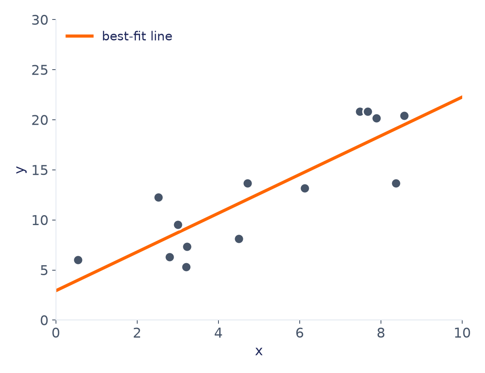
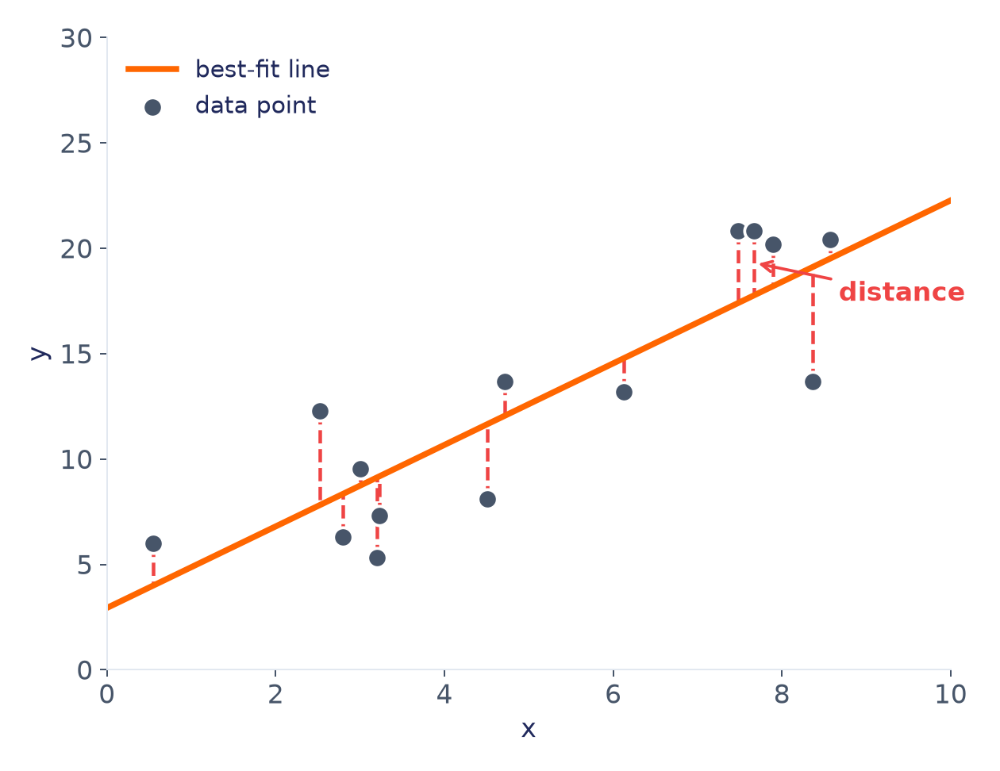
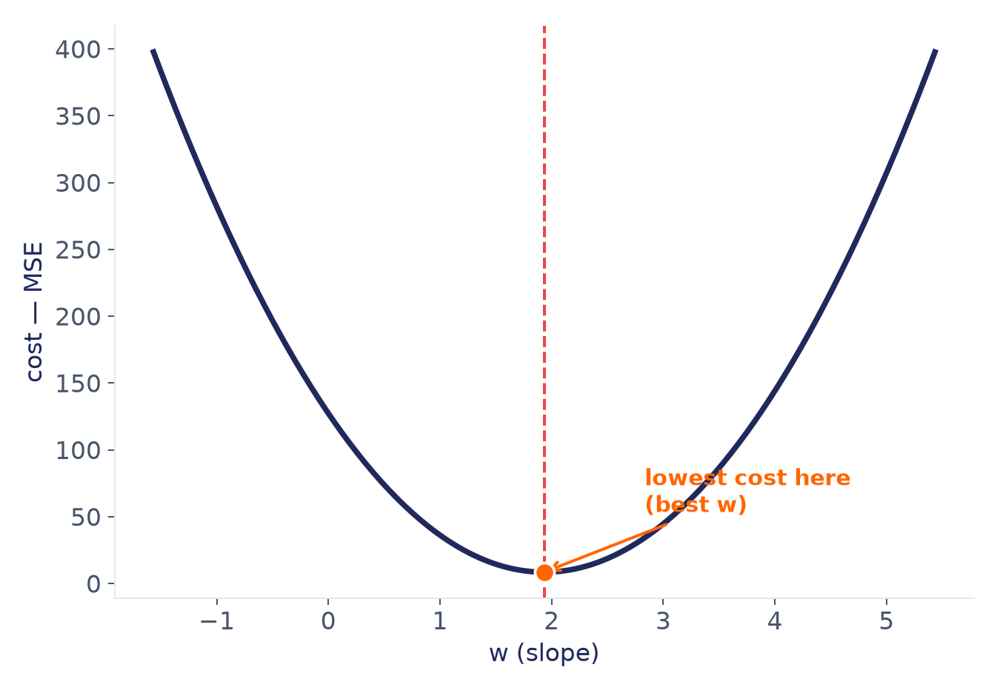
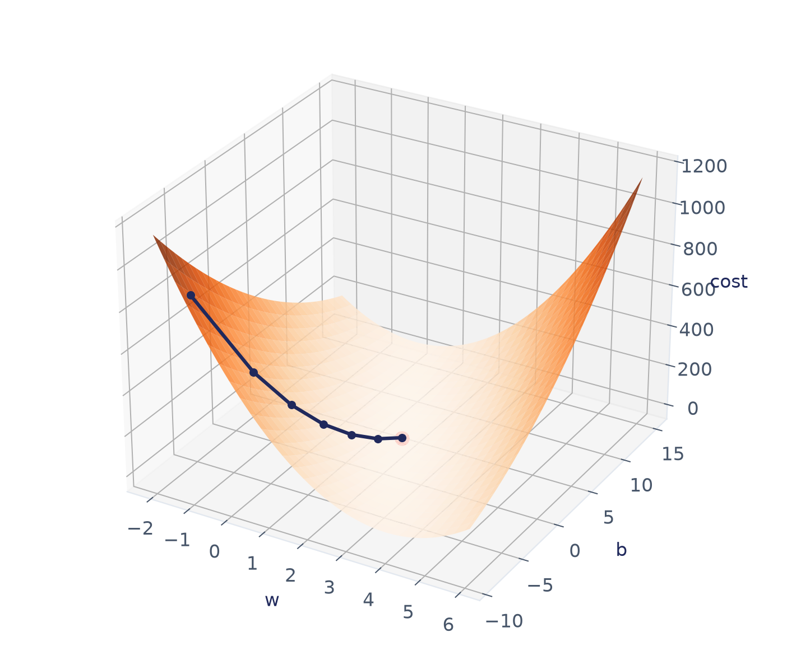
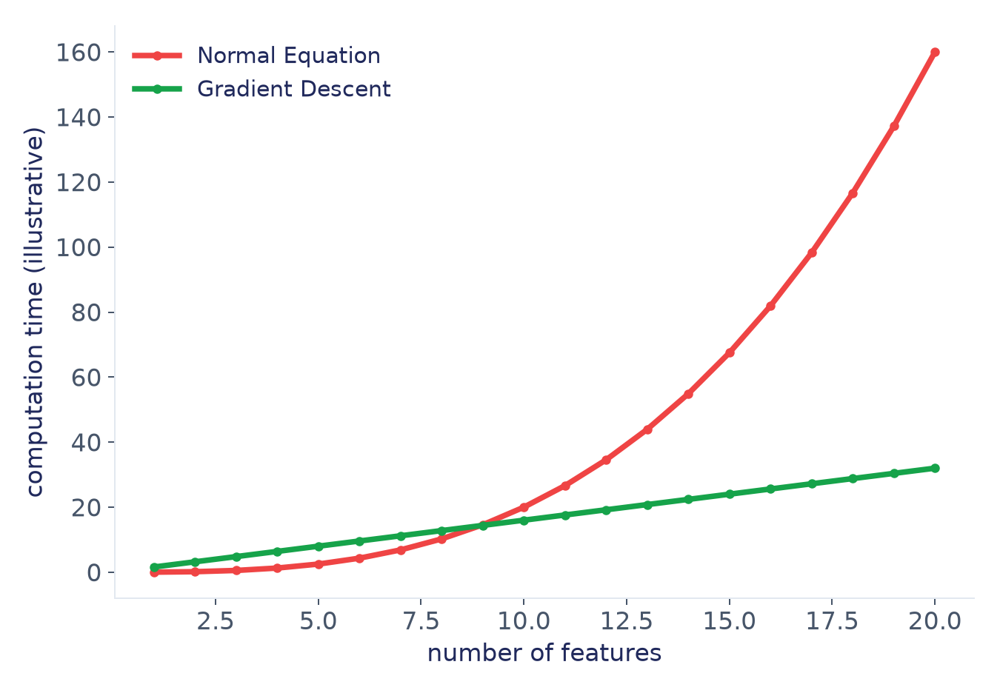
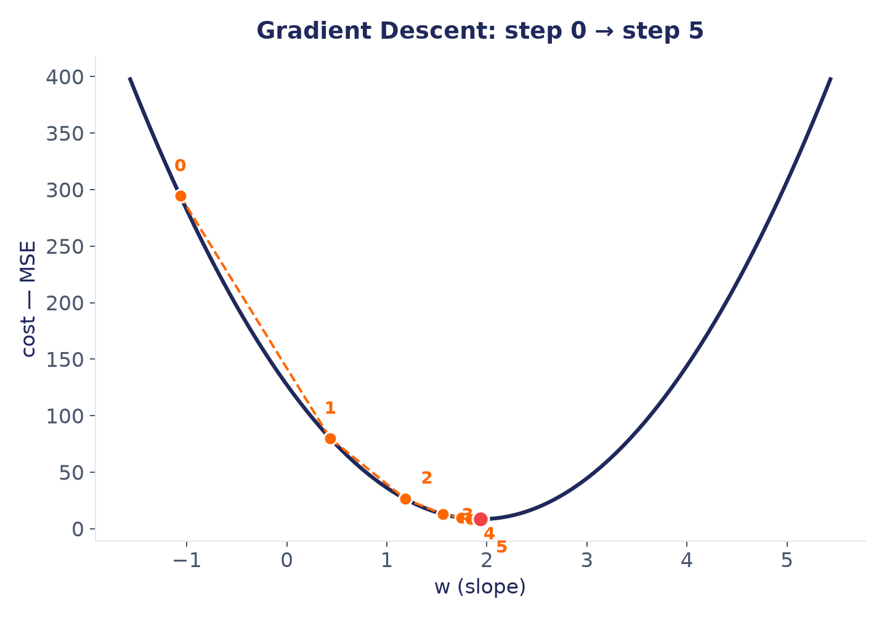
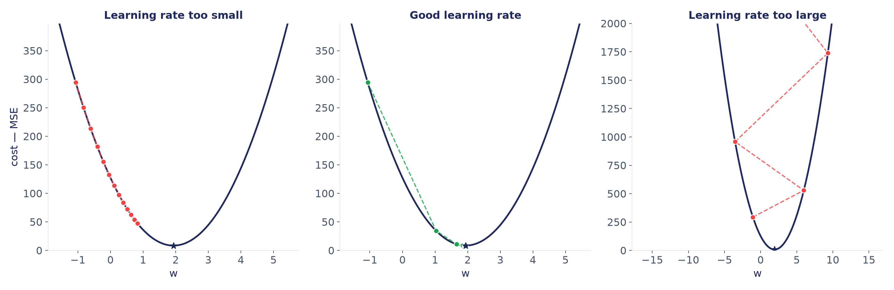
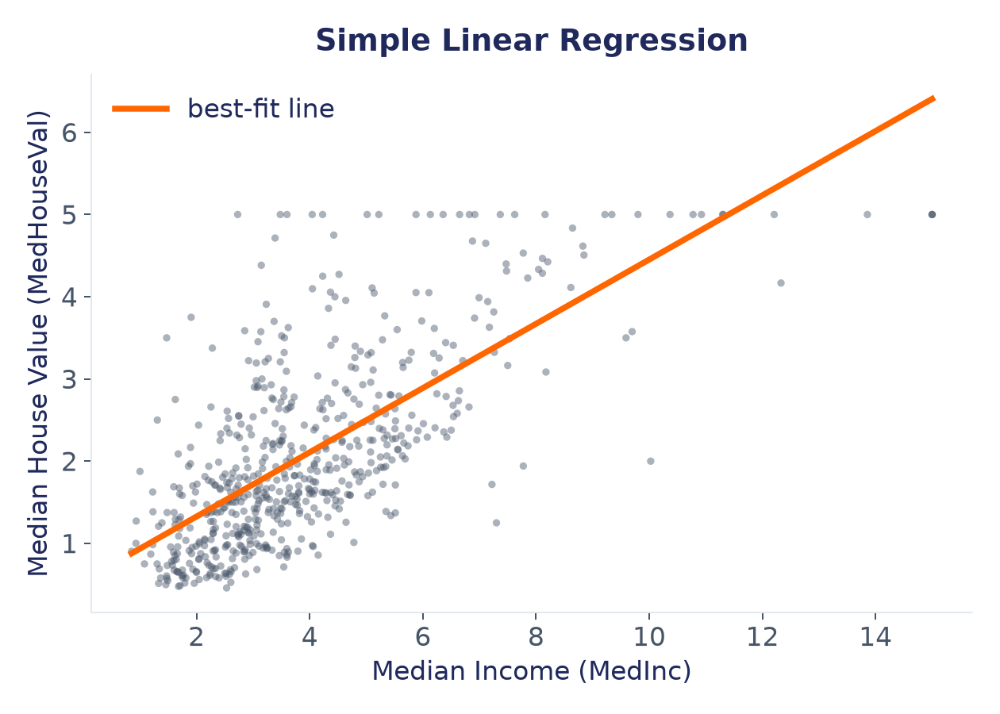

خطهای قرمز و زرد، اصلاً از وسط نقاط رد نمیشوند؛ حدس بدی هستند.
بهترین خط
یک خط، از دل داده

این خط نارنجی، بهجای هر تک نقطه، از میان روند کلی نقاط رد میشود.
اگر بخواهیم برای یک x جدید حدس بزنیم، دنبال همین خط میرویم.
فاصله تا خط
این خط چقدر به نقاط نزدیک است؟
برای اینکه بفهمیم این خط چقدر خوب است، فاصلهی عمودی هر نقطه تا خط را اندازه میگیریم.
هرچه این فاصلهها، روی هم، کوچکتر باشند، خط بهتری داریم.

فرمول
حالا این خط را با فرمول مینویسیم
ŷ = w·x + b
w (وزن / شیب): با یک واحد افزایش x، ŷ چقدر بالا میرود.
b (بایاس / عرض از مبدأ): مقدار ŷ وقتی x = 0 است، جایی که خط محور را قطع میکند.
ŷ (y-hat): مقدار پیشبینیشده روی خط، در برابر y که مقدار واقعی نقطه است.
مفهوم کلیدی
اما چرا این خط، «بهترین» است؟
هر خط حدسی، برای هر نقطه یک فاصله (خطا) دارد.
«بهترین» خط، خطی است که مجموع مربعات این فاصلهها کمترین باشد:
cost = mean( (y − ŷ)² )
مربع کردن، فاصلههای مثبت و منفی را خنثی نمیکند.
خطاهای بزرگ، هزینهی بسیار سنگینتری میگیرند.
برای پیدا کردن دقیق w و b هزینه را کمینه میکنیم؛ به کمک scikit-learn این کار را انجام میدهیم.
جستوجوی w و b
w و b را از کجا پیدا میکنیم؟
فرض کنید b را ثابت نگه داریم و فقط w را عوض کنیم.
برای هر w، یک عدد هزینه بهدست میآید.
این نمودار، شکل یک کاسه دارد. هرچه از پایین کاسه دورتر شویم، هزینه بیشتر میشود.
نقطهای که هزینه کمترین است، همان بهترین w است.

فضای هزینه
در واقعیت، w و b با هم جابهجا میشوند

حالا فضای هزینه یک کاسهی سهبعدی است: یک محور برای w، یک محور برای b، و ارتفاع یعنی هزینه.
خط تیره، مسیر جستوجوی مدل را نشان میدهد: قدمبهقدم به سمت پایین کاسه حرکت میکند، تا به کمترین هزینه برسد.
جستجوی w و b مناسب چگونه انجام میشود؟
Normal Equation
یک فرمول، یک محاسبه
Gradient Descent
گامبهگام رو به پایین
روش اول · Normal Equation
Normal Equation: حل مستقیم مسئله
شبیه حل کردن یک معادلهی ریاضی معمولی است: عدد ۲x = ۱۰ را حدس نمیزنید، مستقیم دو طرف را بر ۲ تقسیم میکنید و جواب را میگیرید.
Normal Equation هم دقیقاً همین کار را با دادهی ما میکند:
یک فرمول ریاضی که با یک بار جایگذاری xها و yها،
دقیقترین w و b را مستقیم محاسبه میکند؛ بدون هیچ حدس یا گام تکراری.
روش اول · فرمول
θ = (Xᵀ X)⁻¹ Xᵀ y
θ (تتا) نماد کلی همان w و b است،
و X و y کل دادهی ما هستند.
روش اول · محدودیت
پس چرا همیشه از این فرمول استفاده نمیکنیم؟

وقتی تعداد ویژگیها خیلی زیاد شود، محاسبهی این فرمول بسیار کند میشود. اینجاست که به یک روش جایگزین نیاز داریم.
روش دوم · Gradient Descent
Gradient Descent: قدمبهقدم به سمت پایین
تصور کنید چشمبسته روی یک تپه ایستادهاید و میخواهید به پایینترین نقطه برسید.
زیر پایتان را حس میکنید، یک قدم بهسمت شیبدارترین جهت رو به پایین برمیدارید، و این کار را تکرار میکنید.
Gradient Descent همین کار را با w و b میکند:
از یک نقطهی تصادفی شروع میکند، و در هر قدم، کمی به سمت کاهش هزینه حرکت میکند، تا وقتی به ته کاسه برسد.
روش دوم · گامهای جستوجو
هر قدم، کمی نزدیکتر به ته کاسه

قدم ۰ شروع تصادفی است. هر قدم بعدی، هزینه را کمی کمتر میکند، تا قدمهای ۴ و ۵ که عملاً به پایین کاسه رسیدهاند.
روش دوم · نرخ یادگیری
اندازهی هر قدم هم مهم است

قدمهای خیلی بزرگ → رد شدن از ته کاسه و واگرایی
قدمهای خیلی کوچک → رسیدن به ته کاسه، بسیار کند
چه زمانی از هر یک از روشها استفاده میکنیم؟
Normal Equation
یک محاسبه، جواب دقیق
مناسب برای داده با تعداد ویژگیهای کم تا متوسط
Gradient Descent
تکرار گامبهگام، جواب تقریبی
مناسب برای دادههای بزرگ و تعداد ویژگیهای زیاد
جزئیات ریاضی این دو روش از حوزهی این دوره خارج است؛ کافی است بدانید این اتفاق پشت صحنه میافتد، و
scikit-learn خودش روش مناسب را انتخاب میکند.
رگرسیون ساده روی داده واقعی
حالا بهجای چند نقطه ساختهشده، از دادهی واقعی California Housing استفاده میکنیم:
از روی میانگین درآمد یک منطقه (MedInc)،
میانگین ارزش خانه (MedHouseVal) را پیشبینی میکنیم.

نکته
هزاران نقطه، همان یک اصل
اینجا بهجای ۱۴ نقطه، بیش از ۶۰۰ منطقه داریم. اما اصل تغییری نکرده:
هنوز دنبال یک خط راست میگردیم که مجموع مربعات فاصلهاش تا نقاط، کمترین باشد.
یک ویژگی، یک خط، دو عدد (w و b)
قدم بعدی: اگر بیش از یک ویژگی داشته باشیم چه؟
همین ایده را به چند ویژگی همزمان تعمیم میدهیم.